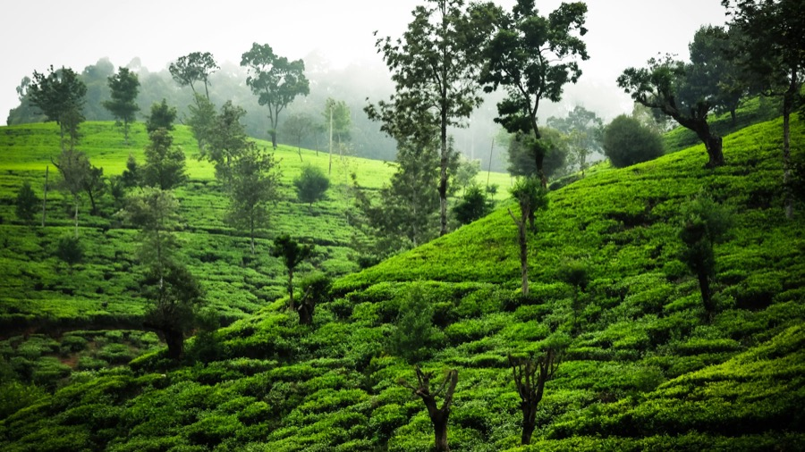
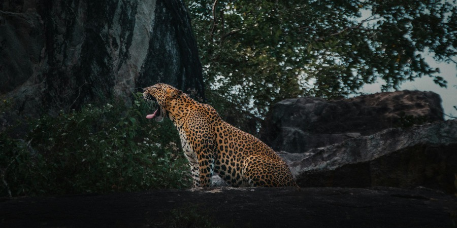
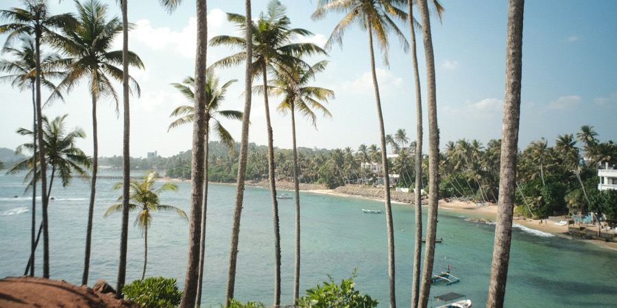

Sri Lanka travel FAQ
The things people ask us most, answered by the people who drive here every week.
— the Ceylon Hop teamVisa & entry
What you need before you fly, and how to stay longer.
How do I get a visa for Sri Lanka?
Most travellers don't need a traditional visa. You apply online for an Electronic Travel Authorization (ETA) through the official government portal, eta.gov.lk. It takes a few minutes, and approval usually arrives by email within minutes to a few hours. It is the easiest and fastest route, and what we recommend for almost everyone.
What are the official ways to apply?
Applying online yourself is the simplest, but there are four official channels:
- Yourself, online — the standard route, straight through the official ETA portal.
- Through a third party — someone applies and pays on your behalf, usually for a slightly higher fee.
- At a Sri Lankan overseas mission — your nearest embassy or consulate.
- At the Department of Immigration & Emigration head office in Colombo.
Whichever you use, apply online before you fly — don't count on getting an ETA at the airport.
How much does the ETA cost, and how long does it take?
- Processing: a few minutes to a few hours for a standard online application.
- Cost: since 25 May 2026, a free 30-day ETA for nationals of 40 listed countries — you still have to apply — and a fee for everyone else. The official site shows the current list and amount.
- Where: only the official www.eta.gov.lk. Third-party websites often charge more for the same service.
How do I extend a tourist visa?
Apply online through the Department of Immigration's eServices portal, or in person at the head office in Battaramulla, Colombo.
Before you fly
The small things that make the first day easy.
Should I get a local SIM, and where?
Yes — Sri Lanka has a few mobile networks with good coverage across most of the island, including the tourist belts like Mirissa and Weligama and the hill-country roads toward Ella.
Physical SIM: easiest at the airport counters near baggage claim. Bring your passport; activation takes a few minutes. If you miss them, retail outlets island-wide sell SIMs for a small cost, and a tourist bundle usually activates instantly.
eSIM: most networks offer a tourist eSIM if your phone supports it, bought and activated digitally before or after you land — no SIM tray needed.
Will my travel card (Wise, Revolut) work here?
Yes, for card payments and ATMs. Check your fee-free monthly withdrawal limit before you go — once you pass it, a percentage fee usually applies. And ask your home bank about international withdrawal fees and daily limits; some cap foreign withdrawals lower than Sri Lanka's ATMs allow.
What do I need to pack for temples?
Something that covers your shoulders and knees — a light scarf or sarong does the job and packs flat. Shoes come off at the entrance, so slip-ons help. The Temple of the Tooth in Kandy enforces this strictly; most other temples are relaxed but the rule is the same.
Do I need anything for leeches?
Only if you're hiking in the wetter, forested areas — Ella, Sinharaja, Horton Plains, the Knuckles, parts of the hills around Kandy — especially during and after the rains. Long socks or leech socks help, and a small sachet of salt is the classic fix (see Health & safety).
Money
Rupees, cards, ATMs, tipping — and what a day actually costs.
What's the exchange rate?
The local currency is the Sri Lankan Rupee (LKR). USD 1 is roughly LKR 331 to 335, though the rate moves daily — check a live rate before you travel rather than relying on a fixed number.
Where's the best place to change money?
You'll generally get a better rate changing cash once you're in Sri Lanka than before you leave home. Don't change your whole trip budget at the airport — the rate there is usually weaker than in the city.
Cash or card?
Both. Cards are widely accepted in hotels, malls and bigger restaurants, but smaller cafés, tuk tuks, local shops and rural areas are often cash only. Carry a mix, and keep small notes for day-to-day spending.
- Contactless (tap-to-pay) isn't widespread outside the bigger cities and malls, so don't assume you can tap everywhere.
- Small businesses often can't break large notes — breaking a 5,000-rupee note for a 200-rupee fare is a common friction point.
Should I use ATMs?
Yes — they're everywhere in cities and most towns. If the ATM offers to "convert" the amount for you (Dynamic Currency Conversion), always say no and let your own bank do the conversion: the ATM's rate is usually 3 to 5% worse. Use a debit card, not a credit card — credit cards usually trigger a cash-advance fee.
Which ATMs are best for foreign cards?
Bank of Ceylon (BOC) and Commercial Bank are generally the most fee-free or low-fee for foreign cards, though it varies with your own bank, so try both if you can. HNB, Seylan and Sampath tend to charge a flat fee per withdrawal, usually LKR 500 to 1,000, on top of whatever your home bank charges. Most ATMs cap a single withdrawal at LKR 100,000 to 200,000, so you may need two goes for more than that.
Is tipping expected?
Not mandatory, but appreciated. Most restaurants and hotels already add a service charge, so a tip on top is optional — a little extra for good service is always welcome. For drivers and guides, a tip at the end of the trip is customary.
Is bargaining normal?
Prices are fixed in shops, malls and restaurants. Bargaining is expected at markets and for unmetered tuk tuks — agree the price before you get in, or before you buy.
What does a day cost?
It depends on your style — where you sleep, what you eat, and how often you move between places. Per person, per day, as a rough guide:
- Budget — around USD 25 to 50. Budget rooms, local food, buses and trains. Public transport is cheap but crowded; on selected routes our shared taxi runs on set days and gives you a seat at a fixed price — Colombo Airport to Sigiriya is $27.49 a seat, Ella to Yala $22.99.
- Mid-range — around USD 60 to 100. Comfortable guesthouses or boutique hotels, a mix of local and tourist restaurants, activities, and convenient transport. Our private transfers start around $29 for a short hop like Galle to Mirissa; the price is per car, so it goes a long way split between friends or family.
- Luxury — USD 150 to 300 and up. Higher-end hotels, a wider choice of restaurants, private transport or a chauffeur for the whole trip.
Private-transfer prices are live from our booking engine — what you see is what you pay.
These are approximate. Entrance fees, safaris and travel days push a day up; a day spent in one place pulls it down. All our routes and prices →
Fixed prices for every routePrivate car or a shared seat — see what each leg costs before you commitSee routes & prices →Getting around
Trains, buses, Colombo's new metro buses — and when to just let us drive.
How do we book the Kandy to Ella train?
Right now the Kandy to Nanu Oya line isn't running: Cyclone Ditwah damaged it in late 2025 and there's no reopening date yet, so that leg has to be done by road. Since 2 October 2026, trains from Colombo run to Peradeniya and Gampola, but not into Kandy station, where a bridge is still being repaired. From Nanu Oya to Ella the train is still running and is still one of the most scenic rides in the country. Reserved seats are sold on the official Sri Lanka Railways site, seatreservation.railway.gov.lk. It's popular and can sell out weeks ahead in peak season, so book as early as you can.
Are the public buses worth it?
Buses cover almost every route in the country and are the cheapest way to get around, but they get crowded — on popular routes and in peak season, standing room only isn't unusual. A solid budget option if you don't mind the squeeze; worth knowing before you commit to one for a long journey. Our bus guide →
What are the new Metro Buses in Colombo?
Sri Lanka launched a government-run Metro Bus service in April 2026, and on 29 September 2026 it grew from two routes to seven, with around 122 air-conditioned, low-floor buses. They run on fixed, numbered routes (CM01 to CM08, with no CM07 yet) and stop only at designated stops.
Useful for travellers:
- CM06 (Kollupitiya Circular) — a loop around central Colombo, the most useful if you're staying in the city.
- CM04 (Dematagoda to Panadura) — south along the coast through Dehiwala and Moratuwa; handy near Mount Lavinia.
- CM01 and CM03 — connect to Makumbura, where the expressway buses to the south leave from.
Good to know: no route goes to the airport; they're city buses, not luggage buses; they still sit in traffic (more comfortable than regular buses, not faster); they're wheelchair accessible — low floors, ramps, priority seating; Colombo only for now, Kandy and Galle mentioned for later. Use only the official app and site, lankametro.lk — some unofficial sites still show pilot timetables.
How do I pay on a metro bus?
Tap an LMT Touch card or scan a QR ticket in the official LMT GO app. We couldn't find an official fare table yet, so check the app or ask on board before you ride. Cash was reported during the pilot, but confirm on your route.
Should I ask the driver for the scenic road?
When you can, yes. On some legs there's a non-highway route that takes a little longer but passes through small towns, tea estates or coastline you'd never see from the expressway. Worth asking for on Kandy to Nuwara Eliya, or along the south coast.
Where to start
Where you spend the first night depends on who's coming.
I've just landed and need a first night near the airport — where?
Negombo or Katunayake, both 10 to 15 minutes from the airport. Katunayake has budget-friendly hotels if you just want to sleep after a late flight. Negombo is a beach town with more restaurants and things to do — better if you'd like to relax a little before heading on.
I'm travelling solo — where should I start?
Ella and Colombo city are both good choices: plenty of hostels, cafés and other travellers around. If you'd rather start somewhere quieter, Negombo's beach is an easier place to settle in alone.
We're a family — where should we start?
A beach town is usually easier than the hill country for the first couple of nights: less travel, more facilities nearby, which helps after a long flight. Bentota and Negombo both have family-friendly hotels with pools — useful if the kids need to rest and play before you move on.
One of us has limited mobility — where's easiest?
Flatter beach towns like Negombo or Bentota are easier to get around than the hill country or Sigiriya. We'd also book a private driver from the start rather than trains or tuk tuks, so you have transport right to the door, without stairs or long walks.
A private driver for the whole tripDoor to door, no stairs, no changes — tell us what you need and we'll plan around itAsk us on WhatsApp →We want to see most of Sri Lanka — which way round?
A common route: start on the west coast in Negombo, head to Sigiriya and Dambulla, then up into the hills (Kandy, Nuwara Eliya, Ella), and finish on the south coast before heading back to Colombo for your flight. It keeps the trip moving in one direction instead of doubling back.
Wildlife & safaris
Each park is best at one thing. The short answer first, then the parks.

Which safari park should you pick?
- Leopards: Yala for the best odds; Wilpattu for a quieter drive with slightly lower odds.
- Elephants, any time of year: Udawalawe.
- The spectacle: Minneriya or Kaudulla, July to October, for "The Gathering".
- Avoid crowds: Wilpattu, then Udawalawe.
- Based on the south coast, little time: Yala or Udawalawe — about two hours apart.
Yala
Best for leopards, and the widest variety — elephants, sloth bears, crocodiles, birds.
- Crowds
- Busiest by far — roughly twice the visits of the next park in 2025. Block 1, where most of the leopards are, gets the heaviest traffic: dozens of jeeps at one sighting.
- Season
- Roughly February to July. The main blocks close for several weeks each year around September and October — check the dates before you book.
- Go
- Morning — cooler, animals more active. Pick-ups around 4:30 AM for a 6 AM gate; expect a queue either slot.
Udawalawe
Best for elephants, reliably, all year. Open grassland makes animals easy to spot, even at midday.
- Crowds
- Moderate — about half of Yala's numbers. Calmer, not empty.
- Season
- Open year round; the dry season, roughly May to September, is best, when animals gather at the waterholes.
- Go
- Morning or late afternoon.
Wilpattu
Best for a quiet safari — leopards, sloth bears, natural lakes and birdlife.
- Crowds
- Light — roughly a fifth of Yala's visits in 2025.
- Season
- Open year round; conditions generally best from around March to September.
Minneriya / Kaudulla
Best for "The Gathering" — 300-plus elephants around the reservoir.
- Crowds
- Quieter than Yala most of the year, busy at peak with clusters of jeeps around the herds.
- Season
- Roughly July to October, peaking August and September. The herds move between the two parks with the water levels.
- Mornings (roughly 6 to 10 AM) tend to give the best sightings; afternoons from about 3 PM give softer light for photos.
- Sightings are never guaranteed, in any park.
- Closure dates and park fees change — confirm both before booking.
- Yala's Block 1 has one of the highest leopard densities recorded anywhere: the Yala Leopard Diary identified 189 individuals there between 2013 and 2026, about 0.5 per square kilometre. That's why the odds are best here.
Beaches
Surf, swimming, nightlife or quiet — the south coast has one for each.

Which beach should you pick?
- Only time for one: Mirissa or Hiriketiya — they cover the widest range (whales plus a beach scene, or surf plus a slow pace).
- Learning to surf: Weligama, then move on to Hiriketiya or Mirissa to progress or just relax.
- Calm swimming, families: Unawatuna.
- Away from the crowds: Tangalle.
Mirissa
Best for whale watching and a social atmosphere.
- Vibe
- A relaxed beach town that's become one of the top whale-watching spots in the world (November to April). A solid mix of restaurants, cafés and a few lively evening spots, without feeling as built-up as Unawatuna.
- Swimming
- Good; busier in season.
- Surf
- Some — Weligama next door is the surf beach.
Hiriketiya
Best for mid and experienced surfers, a slower pace, café hopping.
- Vibe
- A small horseshoe bay with consistently good surf. Younger and more laid-back than Mirissa, with a strong café and yoga culture. Suits settling in for a few days rather than passing through.
- Swimming
- Fine on the inside of the bay; watch the surf side.
- Surf
- Consistent; intermediate and up.
Unawatuna
Best for calm swimming and a classic beach holiday.
- Vibe
- A sheltered crescent bay, more developed than Hiriketiya or Mirissa, with a bigger stretch of hotels and restaurants right on the sand.
- Swimming
- Some of the calmest on the south coast — genuinely safer for families and less confident swimmers than the open beaches nearby.
- Surf
- No.
Weligama
Best for learning to surf, specifically.
- Vibe
- Less about the beach, more about the activity — surf schools line the whole bay and most people come to learn, then move on.
- Swimming
- Gentle.
- Surf
- The clear first choice for beginners: soft, sandy-bottomed waves, a gentle swell, no reef or strong current.
Tangalle
Best for getting away from the crowds.
- Vibe
- A longer, wilder stretch of coast and fewer people. Good once you've done the busier towns and want to switch off — which also means fewer restaurants and less nightlife within walking distance.
- Swimming
- Open beaches; take care with currents.
- Surf
- Little.
Culture & etiquette
A few things that are easy to get wrong, and easy to get right.
Can I take photos with Buddha statues?
Be careful here — it's a common mistake. Never pose with your back to a Buddha statue, never climb on one, and avoid selfies that could be seen as disrespectful. Treat statues and images with the same respect you'd show inside the temple itself.
Should I ask before photographing people?
Yes, always — especially in rural areas, at markets and at religious sites. Most people are happy to say yes, and it's a basic courtesy that's genuinely appreciated.
What should I know about the Temple of the Tooth?
Sri Lanka's most sacred Buddhist site enforces the dress code more strictly than most temples — security staff check that shoulders and knees are fully covered, so arrive dressed properly. Shoes off before you enter the complex. The relic itself is never on display; you're viewing the golden casket it's kept in, during one of three daily puja (worship) sessions: 5:30 to 7 AM, 9:30 to 11 AM, and 6:30 to 8 PM.
What are Poya days?
Full-moon days — one a month, and a public holiday. Alcohol isn't sold on Poya days: some bars and restaurants may still serve what's already open, but new sales are restricted. Check the Sri Lankan calendar if it matters to your plans, and pick something up the day before.
Food & drink
What to order, and what to ask for.
I'm vegetarian or vegan — will I eat well?
Genuinely well. Sri Lankan cooking is naturally vegetable and legume heavy — dhal, coconut sambols, jackfruit curry and a wide range of vegetable curries are everyday staples, not special requests. Most restaurants have vegan or vegetarian options even if the menu doesn't label them.
What's the local spirit?
Arrack — distilled from coconut-flower sap, Sri Lanka's answer to rum. Usually drunk with ice, soda or ginger ale. Worth trying at least once.
What's the local beer?
Lion. It's the country's oldest and largest brewery, and Lion Lager is the standard order at most bars, restaurants and beach shacks — light and easy-drinking at around 4.8%. Lion Strong is a heavier lager; Lion Stout is a rich, dark beer with chocolate and coffee notes. Strong beers and stouts are popular here, even in the heat.
Health & safety
The pharmacy, the dispensary, the hospital — and the leeches.
Do I need mosquito repellent?
Yes — carry it with you at all times, even in the city. Soffell is the local go-to brand, available at any pharmacy or supermarket.
What do I do about leeches?
Leeches are common in the wetter, forested areas — Ella, Sinharaja Forest, Horton Plains, some of the hills around Kandy and the Knuckles Range — especially during and after the rains. Long socks or leech socks help if you're hiking there.
If one attaches, don't pull it off — that can leave part of its mouth in the wound. Sprinkle a pinch of salt directly on it; it curls up and drops off within seconds. Worth carrying a small sachet of salt in leech country.
What's Samahan?
Your best friend if you're feeling under the weather: a traditional Ayurvedic herbal blend of 14 ingredients — mainly ginger, pepper, cinnamon, coriander and liquorice — dissolved in hot water. Widely used for colds, sore throats and general aches, and sold at any pharmacy or supermarket.
What's a dispensary, and should I use one?
A small neighbourhood clinic found in most towns, where you see a doctor and get your medicine in the same place. The most convenient option for minor problems — an upset stomach, a cold, a mild fever, a rash, a small cut.
- Are they free? Government and municipal dispensaries offer free consultations and medicines, mainly for residents, and can be busy. Private dispensaries charge a small consultation fee and are quicker — usually the better choice for travellers.
- Do I need an appointment? Usually not. Walk in, wait your turn, see the doctor. Evenings are busiest; earlier in the day is quicker.
Can I buy medicine without a prescription?
Pharmacies are everywhere, and many common medicines are sold without a prescription. If you take regular medication, bring enough for the whole trip, plus a copy of the prescription.
When should I go to a hospital instead?
For anything serious — chest pain, a bad injury, a high fever with vomiting, breathing problems — skip the dispensary and go straight to a hospital. The national ambulance line is 1990.
Which private hospitals in Colombo should I know?
All of these run 24-hour emergency departments and have international patient support:
- Lanka Hospitals — 578 Elvitigala Mawatha, Colombo 5. A flagship private hospital, with a helipad for transfers from outside the city.
- Asiri Central Hospital — 114 Norris Canal Road, Colombo 10. Part of the country's largest private hospital group; often recommended for efficient emergency care.
- Durdans Hospital — 3 Alfred Place, Colombo 3. JCI-accredited, with an international patient care service.
- Nawaloka Hospital — 23 Deshamanya H K Dharmadasa Mawatha, Colombo 2. Long-established, with a dedicated international patient team.
- Asiri Surgical Hospital — 21 Kirimandala Mawatha, Colombo 5. A good option for surgical and specialist care.
Still wondering?
This page grows from what you ask. Message us and we'll answer — and probably add it here.